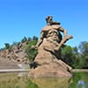
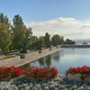

Этому городу выпала нелегкая участь быть поворотным пунктом в некоторых важнейших
исторических событиях страны. Устояли бы большевики у власти если бы оборона Царицына была менее
успешной? Как бы закончилась Вторая Мировая Война если бы Сталинград пал в 1942 году?
Ведь в обоих случаях вероятность противоположного исхода была достаточно высока!
Ответы на эти вопросы Вы узнаете из обзорной экскурсии по Волгограду, более того Вы побываете в этих
судьбоносных для нашей Родины местах!
Что Вы посетите?
За время экскурсии Вы побываете в историческом центре города
(площадь
Павших Борцов). Здесь впервые в истории бойцами Красной Армии был взят в плен
немецкий
фельдмаршал Ф. Паулюс, в соседнем здании годами ранее жил и работал И. В. Сталин, а также
происходили и другие значимые исторические события, связанные с такими людьми как Петр Первый,
Александр Суворов, Максим Горький и другие.
Кроме того, Вы побываете у дома Павлова и у мельницы
Гергардта. Франция
пала за 38 дней, а дом Павлова держал оборону 58 дней и так и не был взят немецкими оккупантами!
На этой же площади находится интереснейший музей-панорама Сталинградская битва, с ценными
экспонатами: снайперской винтовкой Василия Зайцев из которой он уничтожил 225 солдат и офицеров
противника, Меч Сталинграда врученный Уинстоном Черчиллем Иосифу Сталину в присутствии
президента США Франклина Рузвельта, и с другими ценными экспонатами, которые Вам обязательно
следует увидеть!
И в окончании экскурсии конечно же посетите Мамаев
Курган, главную
высоту нашей Родины, одну из семи чудес России! Вид с Высоты 102 на город захватывает дух, смена
почетного караула всегда торжественное событие, а у подножья скульптурной композиции
“Родина-Мать зовет” Вы обязательно почувствуете всю грандиозность этого места!


Мамаев Курган
Кроме трех основных локаций будут фото-остановки в пойме реки Царица,
набережной 62ой армии, у бронекатера БК-13 и у фонтана “Бармалей” на центральном вокзале.
Цена обзорной экскурсии по Волгограду
От 3000 рублей за экскурсию. Если Вас до 4х человек и
соответственно
экскурсионная группа может поместиться в личное авто экскурсовода, полная стоимость экскурсии 3000 ₽.
Трансфер с гостиницы и обратно включен в стоимость!
Если экскурсионная группа достаточно большая мы организуем комфортабельный автобус с кондиционером,
телевизором и микрофоном. Стоимость в таком случае будет выше, все зависит от того на сколько
вместительный транспорт Вам понадобится.
Сколько времени это займет?
Обычно экскурсия занимает 3,5-4 часа. Но если время экскурсии
попадает на час
пик, то из-за пробок Вы, возможно, вернетесь в гостиницу немного позже. Кроме того, на майские праздники
из-за большого количества туристов движение в основных туристических достопримечательностях сильно
затруднено.
Заключение
Город-герой Волгоград следует посетить каждому жителю России, чтобы по крайней
мере раз в жизни увидеть памятник-ансамбль "Героям Сталинградской битвы" на Мамаевом Кургане своими
глазами. А то
какие
впечатления у Вас останутся от нашего города во многом зависят от экскурсовода, так вот мы постараемся
сделать Ваше знакомство с городом незабываемым!

{kind=link}
{kind=link}
{kind=link}
{kind=link}
{kind=link}
{kind=link}
{kind=link}
{kind=link}
{kind=link}
{kind=link}